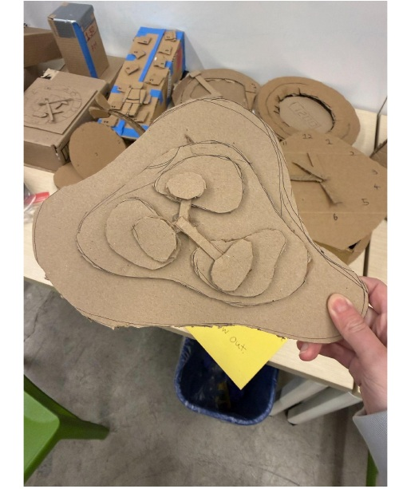
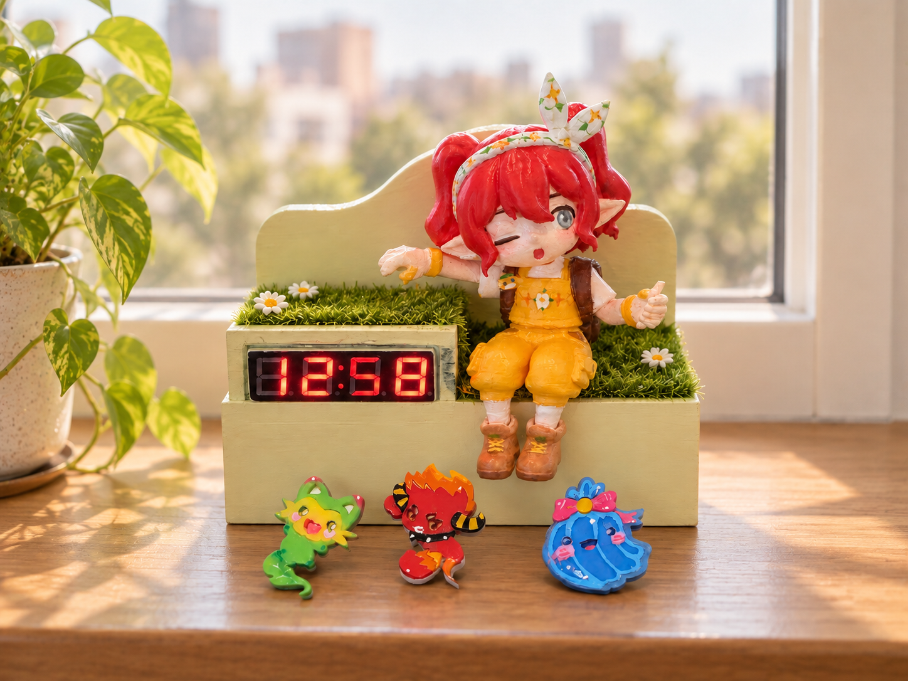
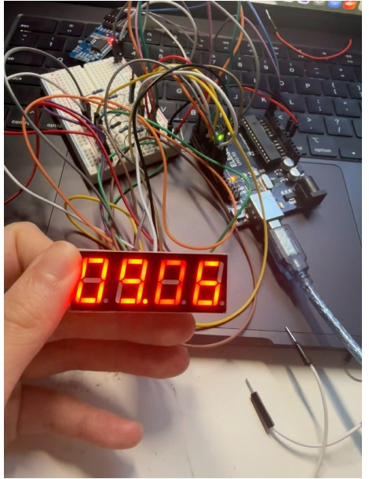
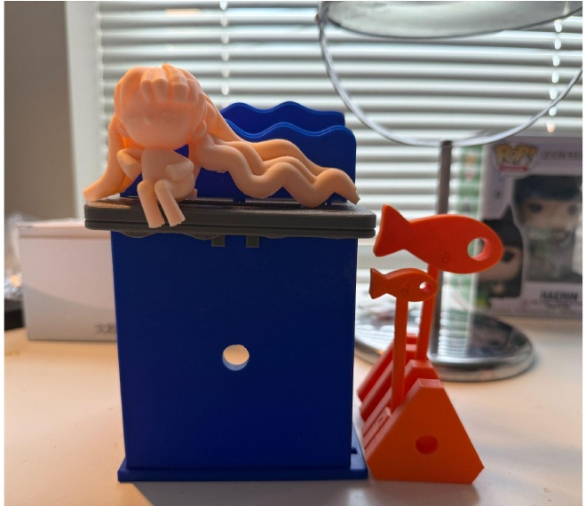
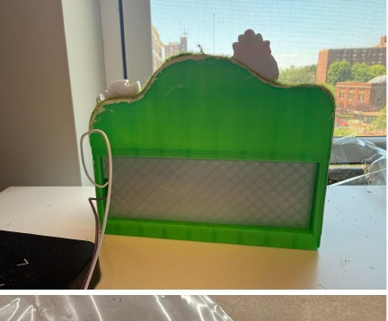

01
Cardboard Prototype
Tested design effectiveness, proportions, and structural stability with quick physical mockups.
Physical Prototyping
A handmade digital clock that combines real-time display with a playful, garden-inspired decorative scene.

The project explored physical prototyping through sketching, computer-aided design, laser cutting, 3D printing, and electronics—moving from rough form studies to a working clock with a real-time display.

Tested design effectiveness, proportions, and structural stability with quick physical mockups.

Iterated on the Arduino setup until the 4-digit LED display could show real time properly.

Adjusted dimensions and refined the physical enclosure through repeated printing and testing.

Integrated electronics, the enclosure, and decorative elements into a single working prototype.
The Tiny Garden Clock is a functional digital clock and a small, joyful scene — showing how technology can live alongside creativity and personal expression in everyday objects.
Back to
Selected Work →